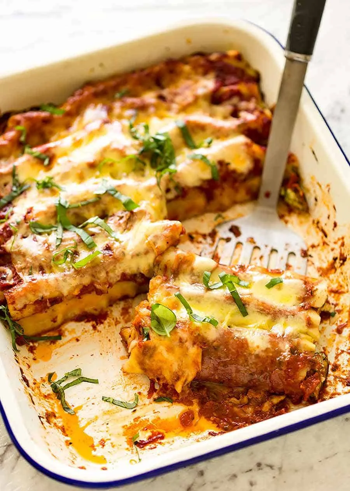

Spinach and Ricotta Cannelloni recipe

Ingrediends :
- Tomato sauce
- Salt
- Pepper
- 1 Oinon
- 2 table-spoon of Olive oil
- 2 eggs
- 1 canneloni box
- 350g of minced meat
- 150g of saussage flesh
- 125g of mozzarella
Preparation :
- Heat the olive oil in a pan, and sauté the onion and garlic for 10 minutes on low heat, stirring occasionally.
- Mix the ground meat and sausage meat using a food processor.
- In a bowl, mix the meat, eggs, salt, and pepper
- Then, cook everything in the pan for a good 10 minutes. Drain as much juice as possible.
- Butter a dish and spread 1/3 of the tomato sauce on the bottom.
- Fill the cannelloni with the meat mixture using a tablespoon, and place them in the dish.
- Pour the remaining sauce over the cannelloni, and sprinkle with mozzarella.
- Bake for 35 to 40 minutes in the oven at 180°C (350°F), until the cannelloni are golden and the sauce is bubbling.
- Let rest for 10 minutes before serving. Enjoy your meal!